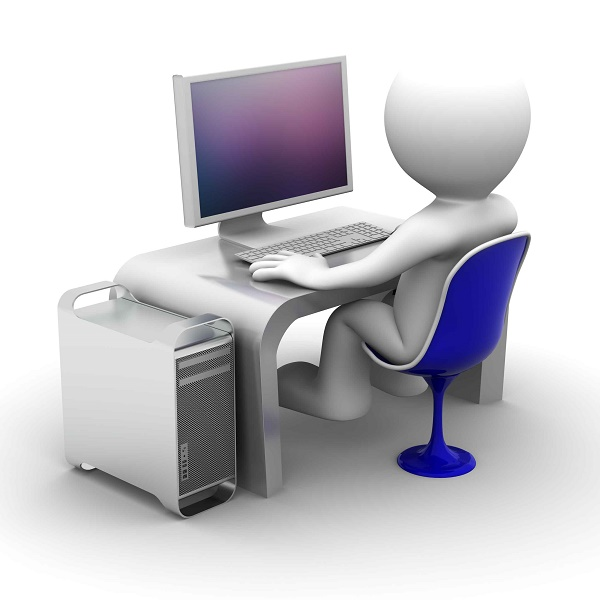

Компьютер

Компью́тер («вычислитель») — устройство или система, способная выполнять заданную, чётко определённую, изменяемую последовательность операций. Это чаще всего операции численных расчётов и манипулирования данными, однако сюда относятся и операции ввода-вывода. Описание последовательности операций называется программой[2].
Компьютерная система — любое устройство или группа взаимосвязанных или смежных устройств, одно или более из которых, действуя в соответствии с программой, осуществляет автоматизированную обработку данных.
Этимология и особенности терминологии
См. также: Электронно-вычислительная машина
Слово компьютер является производным от английских слов to compute, computer, которые переводятся как «вычислять», «вычислитель» (английское слово, в свою очередь, происходит от латинского computāre — «вычислять»). Первоначально в английском языке это слово означало человека, производящего арифметические вычисления с привлечением или без привлечения механических устройств. В дальнейшем его значение было перенесено на сами машины, однако современные компьютеры выполняют множество задач, не связанных напрямую с математикой.
Впервые трактовка слова компьютер появилась в 1897 году в Оксфордском словаре английского языка. Его составители тогда понимали компьютер как механическое вычислительное устройство. В 1946 году словарь пополнился дополнениями, позволяющими разделить понятия цифрового, аналогового и электронного компьютера.
Понятие компьютер следует отличать от понятия Электронно-вычислительная машина (ЭВМ); последняя является одним из способов реализации компьютера. ЭВМ подразумевает использование электронных компонентов в качестве её функциональных узлов, однако компьютер может быть устроен и на других принципах — он может быть механическим, биологическим, оптическим, квантовым и т. п., работая за счёт перемещения механических частей, движения электронов, фотонов или эффектов других физических явлений. Кроме того, по типу функционирования вычислительная машина может быть цифровой (ЦВМ) и аналоговой (АВМ). С другой стороны, термин «компьютер» предполагает возможность изменения выполняемой программы (перепрограммирования), что возможно не для всех видов ЭВМ.
В настоящее время термин ЭВМ, как относящийся больше к вопросам конкретной физической реализации компьютера, почти вытеснен из бытового употребления и в основном используется инженерами цифровой электроники, как правовой термин в юридических документах, а также в историческом смысле — для обозначения компьютерной техники 1940—1980-х годов и больших вычислительных устройств, в отличие от персональных.
История
Основная статья: История вычислительной техники
3000 лет до н. э. — в Древнем Вавилоне были изобретены первые счёты — абак.
500 лет до н. э. — в Китае появился более «современный» вариант абака с косточками на соломинках — суаньпань.
87 год до н. э. — в Греции был изготовлен «антикитерский механизм» — механическое устройство на базе зубчатых передач, представляющее собой специализированный астрономический вычислитель.
В XIII веке Луллий Раймунд создал логическую машину в виде бумажных кругов, построенных по троичной логике.
1492 год — Леонардо да Винчи в одном из своих дневников приводит эскиз 13-разрядного суммирующего устройства с десятизубцовыми кольцами. Хотя работающее устройство на базе этих чертежей было построено только в XX веке, всё же реальность проекта Леонардо да Винчи подтвердилась.
Суммирующая машина Паскаля
XVI век — в России появились счёты, в которых было 10 деревянных шариков на проволоке.
1623 год — Вильгельм Шиккард, профессор университета Тюбингена, разрабатывает устройство на основе зубчатых колес («считающие часы») для сложения и вычитания шестиразрядных десятичных чисел. Было ли устройство реализовано при жизни изобретателя, достоверно не известно, но в 1960 году оно было воссоздано и проявило себя вполне работоспособным.
1630 год — Уильям Отред и Ричард Деламейн создают круговую и прямоугольную логарифмические линейки.
1642 год — Блез Паскаль представляет «Паскалину» — первое реально осуществлённое и получившее известность механическое цифровое вычислительное устройство. Прототип устройства суммировал и вычитал пятиразрядные десятичные числа. Паскаль изготовил более десяти таких вычислителей, причём последние модели оперировали числами с восемью десятичными разрядами.
1673 год — известный немецкий философ и математик Готфрид Вильгельм Лейбниц построил арифмометр, который выполнял умножение, деление, сложение и вычитание. Позже Лейбниц описал двоичную систему счисления и обнаружил, что если записывать определённые группы двоичных чисел одно под другим, то нули и единицы в вертикальных столбцах будут регулярно повторяться, и это открытие навело его на мысль, что существуют совершенно новые законы математики. Лейбниц решил, что двоичный код оптимален для системы механики, которая может работать на основе перемежающихся активных и пассивных простых циклов. Он пытался применить двоичный код в механике и даже сделал чертёж вычислительной машины, работавшей на основе его новой математики, но вскоре понял, что технологические возможности его времени не позволяют создать такую машину[4].
Примерно в это же время Исаак Ньютон закладывает основы математического анализа.
1723 год — немецкий математик и астроном Христиан Людвиг Герстен на основе работ Лейбница создал арифметическую машину. Машина высчитывала частное и число последовательных операций сложения при умножении чисел. Кроме того, в ней была предусмотрена возможность контроля за правильностью ввода данных.
1786 год — немецкий военный инженер Иоганн Мюллер в ходе работ по усовершенствованию механического калькулятора на ступенчатых валиках Лейбница, придуманного его соотечественником Филиппом Хахном[5], выдвигает идею «разностной машины» — специализированного арифмометра для табулирования логарифмов, вычисляемых разностным методом.
1801 год — Жозеф Мари Жаккар строит ткацкий станок с программным управлением, программа работы которого задаётся с помощью комплекта перфокарт.
1820 год — первый промышленный выпуск арифмометров. Первенство принадлежит французу Тома де Кальмару.
1822 год — английский математик Чарльз Бэббидж изобрёл, но не смог построить, первую разностную машину (специализированный арифмометр для автоматического построения математических таблиц) (см.: Разностная машина Чарльза Бэббиджа).
1840 год — Томас Фаулер (англ. Great Torrington) построил деревянную троичную счётную машину с троичной симметричной системой счисления[6][7].
1855 год — братья Георг и Эдвард Шутц (англ. George & Edvard Scheutz) из Стокгольма построили первую разностную машину на основе работ Чарльза Бэббиджа.
1876 год — русским математиком П. Л. Чебышёвым создан суммирующий аппарат с непрерывной передачей десятков. В 1881 году он же сконструировал к нему приставку для умножения и деления (арифмометр Чебышёва).
1884—1887 годы — Холлерит разработал электрическую табулирующую систему, которая использовалась в переписях населения США 1890 и 1900 годов и Российской империи в 1897 году.
1912 год — создана машина для интегрирования обыкновенных дифференциальных уравнений по проекту русского учёного А. Н. Крылова.
Зал счётных машин «Computing Division» Казначейства США. 1920-е
1927 год — в Массачусетском технологическом институте (MIT) Вэниваром Бушем был разработан механический аналоговый компьютер[8].
1938 год — немецкий инженер Конрад Цузе вскоре после окончания в 1935 году Берлинского политехнического института построил свою первую машину, названную Z1. (В качестве его соавтора упоминается также Гельмут Шрейер (нем. Helmut Schreyer)). Это полностью механическая программируемая цифровая машина. Модель была пробной и в практической работе не использовалась. Её восстановленная версия хранится в Немецком техническом музее в Берлине. В том же году Цузе приступил к созданию машины Z2 (Сначала эти компьютеры назывались V1 и V2. По немецки это звучит «Фау1» и «Фау2» и чтобы их не путали с ракетами, компьютеры переименовали в Z1 и Z2).
Компьютер ЭНИАК
1941 год — Конрад Цузе создаёт первую вычислительную машину Z3, обладающую всеми свойствами современного компьютера.
1942 год — в Университете штата Айова Джон Атанасов и его аспирант Клиффорд Берри (англ. Clifford Berry) создали (а точнее — разработали и начали монтировать) первый в США электронный цифровой компьютер ABC. Хотя эта машина так и не была завершена (Атанасов ушёл в действующую армию), она, как пишут историки, оказала большое влияние на Джона Мокли, создавшего двумя годами позже ЭВМ ЭНИАК.
Конец 1943 года — заработала британская вычислительная машина специального назначения Colossus. Машина работала над расшифровкой секретных кодов фашистской Германии.
Февраль 1944 года — группой американских инженеров под руководством Говарда Эйкена закончена разработка первой американской вычислительной машины Марк I. После монтажа, наладки и испытаний она стала использоваться для выполнения сложных баллистических расчётов американского ВМФ.
1944 год — Конрад Цузе разработал ещё более быстрый компьютер Z4, а также первый язык программирования высокого уровня Планкалкюль.
1946 год — публике представлена первая универсальная электронная цифровая вычислительная машина ЭНИАК, разрабатывавшаяся секретно с 1943 года.
4 декабря 1948 года — Государственный комитет Совета министров СССР по внедрению передовой техники в народное хозяйство зарегистрировал за номером 10475 изобретение И. С. Бруком и Б. И. Рамеевым цифровой электронной вычислительной машины.
1950 год — группой Лебедева в Киеве создана первая советская электронная вычислительная машина.
1957 год — американской фирмой NCR создан первый компьютер на транзисторах.
1958 год — Н. П. Брусенцов с группой единомышленников построил первую троичную ЭВМ с позиционной симметричной троичной системой счисления «Сетунь».
Экспоненциальное развитие компьютерной техники
Основная статья: Закон Мура
Диаграмма Закона Мура. Количество транзисторов удваивается каждые 2 года
После изобретения интегральной схемы развитие компьютерной техники резко ускорилось. Этот эмпирический факт, замеченный в 1965 году соучредителем компании Intel Гордоном Е. Муром, назвали по его имени Законом Мура. Столь же стремительно развивается и процесс миниатюризации компьютеров. Первые электронно-вычислительные машины (например, такие, как созданный в 1946 году ЭНИАК) были огромными устройствами, весившими тонны, занимавшими целые комнаты и требовавшими большого количества обслуживающего персонала для успешного функционирования. Они были настолько дороги, что их могли позволить себе только правительства и большие исследовательские организации, и представлялись настолько экзотическими, что казалось, будто небольшая горстка таких систем сможет удовлетворить любые будущие потребности. В контрасте с этим, современные компьютеры — гораздо более мощные и компактные и гораздо менее дорогие — стали воистину вездесущими.
Математические модели
Автомат фон Неймана
Абстрактный автомат
Конечный автомат
Конечный автомат с памятью
Универсальная машина Тьюринга
Машина Поста
Архитектура и структура
Архитектура компьютеров может изменяться в зависимости от типа решаемых задач. Оптимизация архитектуры компьютера производится с целью максимально реалистично математически моделировать исследуемые физические (или другие) явления. Так, электронные потоки могут использоваться в качестве моделей потоков воды при компьютерном моделировании (симуляции) дамб, плотин или кровотока в человеческом мозгу. Подобным образом сконструированные аналоговые компьютеры были обычны в 1960-х годах, однако сегодня стали достаточно редким явлением.
Архитектура фон Неймана
Гарвардская архитектура
Шинная архитектура компьютера против канальной архитектуры
Архитектура персонального компьютера
Классификация параллельных вычислительных систем
Компьютерная память
Процессор
Результат выполненной задачи может быть представлен пользователю при помощи различных устройств ввода-вывода информации, таких как ламповые индикаторы, мониторы, принтеры, проекторы и т. п.
Квантовые ЭВМ.
Основная статья: Квантовый компьютер
Квантовый компьютер — вычислительное устройство, использующее явления квантовой суперпозиции и квантовой запутанности для передачи и обработки данных. Квантовый компьютер оперирует не битами, а кубитами. В результате он имеет возможность обрабатывать все возможные состояния одновременно, достигая огромного превосходства над обычными компьютерами в ряде алгоритмов.
Полноценный квантовый компьютер является пока гипотетическим устройством, сама возможность построения которого связана с серьёзным развитием квантовой теории. разработки в данной области связаны с новейшими открытиями и достижениями современной физики. Сейчас реализованы лишь единичные экспериментальные системы, исполняющие фиксированный алгоритм небольшой сложности.
Первым практическим высокоуровневым языком программирования для такого вида компьютеров считается язык Quipper[en], основанный на Haskell (см. Квантовое программирование).
Классификация и классы компьютеров
Персональный компьютер IBM PC/XT
1.Компьютер PDP-11/40
2.Настольный
3.Сервер
4.Домашний
5.Рабочая станция
6.Персональный
7.Домашний
8.Моноблок
9.Plug PC
10.Игровая приставка
11Игровой
12.Медиацентр
13.Бесшумный ПК
14.Интернет-устройство
15.Нетбук
16.Интернет-планшет
17.Планшетный нетбук
18.Неттоп
20.Консольный компьютер
30.Суперкомпьютеры
14.Мини
15.супермини
16.Персональный
17.Мейнфрейм (супермощный отказоустойчивый сервер)
18.Малые и мобильные
19.Микро
20.Мобильное интернет-устройство
21.Карманный персональный компьютер
22.Ноутбук
23.Субноутбук
24.Ультрабук
25.Нетбук
22.Смартбук
23.Планшетный ПК
24.Интернет-планшет
25.Электронная книга
26.Смартфон
27.Handheld PC
28.Slate PC
29.Stick PC
30.UMPC
31.Портативная игровая система
32.Терминал
33.Мобильный
34.Носимый
35.Электронный переводчик
36.Калькулятор
Другие
37.Умная пыль
38.Нанокомпьютер
39.Элементная основа цифрового компьютера
40.релейные
41.ламповые
42.ферритдиодные
43.транзисторные дискретные
44.транзисторные интегральные
45.Первая троичная ЭВМ «Сетунь» на ферритдиодных ячейках была построена Брусенцовым в МГУ.
Поверхностный характер представленного подхода к классификации компьютеров очевиден. Он обычно используется лишь для обозначения общих черт наиболее часто встречающихся компьютерных устройств. Быстрые темпы развития вычислительной техники означают постоянное расширение областей её применения и быстрое устаревание используемых понятий. Для более строгого описания особенностей того или иного компьютера обычно требуется использовать другие схемы классификаций.
Физическая реализация
Более строгий подход к классификации основан на отслеживании используемых при создании компьютеров технологий. Самые ранние компьютеры были полностью механическими системами. Тем не менее, уже в 1930-х годах телекоммуникационная промышленность предложила разработчикам новые, электромеханические компоненты (реле), а в 1940-х были созданы первые полностью электронные компьютеры, имевшие в своей основе электронные лампы. В 1950—1960-х годах на смену лампам пришли транзисторы, а в конце 1960-х — начале 1970-х годов — используемые и сегодня полупроводниковые интегральные схемы (кремниевые чипы).
риведённый перечень технологий не является исчерпывающим; он описывает только основную тенденцию развития вычислительной техники. В разные периоды истории исследовалась возможность создания вычислительных машин на основе множества других, ныне позабытых и порою весьма экзотических технологий. Например, существовали планы создания гидравлических и пневматических компьютеров, между 1903 и 1909 годами некто Перси И. Луджет даже разрабатывал проект программируемой аналитической машины, работающей на базе пошивочных механизмов (переменные этого вычислителя планировалось определять при помощи ниточных катушек).
В настоящее время ведутся серьёзные работы по созданию оптических компьютеров, использующих вместо традиционного электричества световые сигналы. Другое перспективное направление подразумевает использование достижений молекулярной биологии и исследований ДНК. И, наконец, один из самых новых подходов, способный привести к грандиозным изменениям в области вычислительной техники, основан на разработке квантовых компьютеров.
Впрочем, в большинстве случаев технология исполнения компьютера является гораздо менее важной, чем заложенные в его основу конструкторские решения.
Механический компьютер
Пневматический компьютер
Гидравлический компьютер
Оптический компьютер
Электронный компьютер
Квантовый компьютер
Нанокомпьютер
Биокомпьютер
Биокомпьютер Адлемана
Конечный биоавтомат Шапиро
По способностям
Одним из наиболее простых способов классифицировать различные типы вычислительных устройств является определение их способностей. Все вычислители могут, таким образом, быть отнесены к одному из трёх типов:
специализированные устройства, умеющие выполнять только одну функцию (например, Антикитерский механизм 87 года до н. э. или ниточный предсказатель Вильяма Томсона 1876 года);
устройства специального назначения, которые могут выполнять ограниченный диапазон функций (первая разностная машина Чарльза Бэббиджа и разнообразные дифференциальные анализаторы);
устройства общего назначения, используемые сегодня. Название компьютер применяется, как правило, именно к машинам общего назначения.
Современный компьютер общего назначения
При рассмотрении современных компьютеров наиболее важной особенностью, отличающей их от ранних вычислительных устройств, является то, что при соответствующем программировании любой компьютер может подражать поведению любого другого (хоть эта возможность и ограничена, к примеру, вместимостью средств хранения данных или различием в скорости). Таким образом, предполагается, что современные машины могут эмулировать любое вычислительное устройство будущего, которое когда-либо может быть создано. В некотором смысле эта пороговая способность полезна для различия компьютеров общего назначения и устройств специального назначения. Определение «компьютер общего назначения» может быть формализовано в требовании, чтобы конкретный компьютер был способен подражать поведению универсальной машины Тьюринга. Первым компьютером, удовлетворяющим такому условию, считается машина Z3, созданная немецким инженером Конрадом Цузе в 1941 году (доказательство этого факта было проведено в 1998 году).
Конструктивные особенности
Перфолента
Современные компьютеры используют весь спектр конструкторских решений, разработанных за всё время развития вычислительной техники. Эти решения, как правило, не зависят от физической реализации компьютеров, а сами являются основой, на которую опираются разработчики. Ниже приведены наиболее важные вопросы, решаемые создателями компьютеров:
Цифровой или аналоговый
Фундаментальным решением при проектировании компьютера является выбор, будет ли он цифровой или аналоговой системой. Если цифровые компьютеры работают с дискретными численными или символьными переменными, то аналоговые предназначены для обработки непрерывных потоков поступающих данных. Сегодня цифровые компьютеры имеют значительно более широкий диапазон применения, хотя их аналоговые собратья все ещё используются для некоторых специальных целей. Следует также упомянуть, что здесь возможны и другие подходы, применяемые, к примеру, в импульсных и квантовых вычислениях, однако пока что они являются либо узкоспециализированными, либо экспериментальными решениями.
Примерами аналоговых вычислителей, от простого к сложному, являются: номограмма, логарифмическая линейка, астролябия, осциллограф, телевизор, аналоговый звуковой процессор, автопилот, мозг. [источник не указан 2025 дней]
Среди наиболее простых дискретных вычислителей известен абак, или обыкновенные счёты; наиболее сложной из такого рода систем является суперкомпьютер.
Система счисления
Примером компьютера на основе десятичной системы счисления является первая американская вычислительная машина Марк I.
Важнейшим шагом в развитии вычислительной техники стал переход к внутреннему представлению чисел в двоичной форме[10]. Это значительно упростило конструкции вычислительных устройств и периферийного оборудования. Принятие за основу двоичной системы счисления позволило более просто реализовывать арифметические функции и логические операции.
Тем не менее, переход к двоичной логике был не мгновенным и безоговорочным процессом. Многие конструкторы пытались разработать компьютеры на основе более привычной для человека десятичной системы счисления. Применялись и другие конструктивные решения. Так, одна из ранних советских машин работала на основе троичной системы счисления, использование которой во многих отношениях более выгодно и удобно по сравнению с двоичной системой (проект троичного компьютера Сетунь был разработан и реализован талантливым советским инженером Н. П. Брусенцовым).
Под руководством академика Хетагурова Я. А. разработан «высоконадёжный и защищённый микропроцессор недвоичной системы кодирования для устройств реального времени», использующий систему кодирования 1 из 4 с активным нулём.
В целом, однако, выбор внутренней системы представления данных не меняет базовых принципов работы компьютера — любой компьютер может эмулировать любой другой.
Хранение программ и данных
Во время выполнения вычислений часто бывает необходимо сохранить промежуточные данные для их дальнейшего использования. Производительность многих компьютеров в значительной степени определяется скоростью, с которой они могут читать и писать значения в (из) памяти и её общей ёмкости. Первоначально компьютерная память использовалась только для хранения промежуточных значений, но вскоре было предложено сохранять код программы в той же самой памяти (архитектура фон Неймана, она же «принстонская»), что и данные. Это решение используется сегодня в большинстве компьютерных систем. Однако для управляющих контроллеров (микро-ЭВМ) и сигнальных процессоров более удобной оказалась схема, при которой данные и программы хранятся в различных разделах памяти (гарвардская архитектура).
Программирование
Подробнее по этой теме см. Программирование.
жон фон Нейман — один из основоположников создания архитектуры современных компьютеров
Способность машины к выполнению определённого изменяемого набора инструкций (программы) без необходимости физической переконфигурации является фундаментальной особенностью компьютеров. Дальнейшее развитие эта особенность получила, когда машины приобрели способность динамически управлять процессом выполнения программы. Это позволяет компьютерам самостоятельно изменять порядок выполнения инструкций программы в зависимости от состояния данных. Первую реально работающую программируемую вычислительную машину сконструировал немец Конрад Цузе в 1941 году.
При помощи вычислений компьютер способен обрабатывать информацию по определённому алгоритму. Решение любой задачи для компьютера является последовательностью вычислений.
В большинстве современных компьютеров проблема сначала описывается в понятном им виде (при этом вся информация, как правило, представляется в двоичной форме — в виде единиц и нулей, хотя компьютер может быть реализован и на других основаниях, как целочисленных — например, троичный компьютер, так и нецелых), после чего действия по её обработке сводятся к применению простой алгебры логики. Достаточно быстрый электронный компьютер может быть применим для решения большинства математических задач, а также и большинства задач по обработке информации, которые могут быть сведены к математическим.
Было обнаружено, что компьютеры могут решить не любую математическую задачу. Впервые задачи, которые не могут быть решены при помощи компьютеров, были описаны английским математиком Аланом Тьюрингом.
Применение
Трёхмерная карта поверхности участка земной суши, построенная при помощи компьютерной программы
Первые компьютеры создавались исключительно для вычислений (что отражено в названиях «компьютер» и «ЭВМ»). Даже самые примитивные компьютеры в этой области во много раз превосходят людей (если не считать некоторых уникальных людей-счётчиков). Не случайно первым высокоуровневым языком программирования был Фортран, предназначенный исключительно для выполнения математических расчётов.
Вторым крупным применением были базы данных. Прежде всего, они были нужны правительствам и банкам. Базы данных требуют уже более сложных компьютеров с развитыми системами ввода-вывода и хранения информации. Для этих целей был разработан язык Кобол. Позже появились СУБД со своими собственными языками программирования.
Третьим применением было управление всевозможными устройствами. Здесь развитие шло от узкоспециализированных устройств (часто аналоговых) к постепенному внедрению стандартных компьютерных систем, на которых запускаются управляющие программы. Кроме того, всё бо́льшая часть техники начинает включать в себя управляющий компьютер.
Четвёртое. Компьютеры развились настолько, что стали главным информационным инструментом как в офисе, так и дома. Теперь почти любая работа с информацией зачастую осуществляется через компьютер — будь то набор текста или просмотр фильмов. Это относится и к хранению информации, и к её пересылке по каналам связи. Основное применение современных домашних компьютеров — навигация в Интернете и игры.
Пятое. Современные суперкомпьютеры используются для компьютерного моделирования сложных физических, биологических, метеорологических и других процессов и решения прикладных задач. Например, для моделирования ядерных реакций или климатических изменений. Некоторые проекты проводятся при помощи распределённых вычислений, когда большое число относительно слабых компьютеров одновременно работает над небольшими частями общей задачи, формируя таким образом очень мощный компьютер.
Наиболее сложным и слаборазвитым применением компьютеров является искусственный интеллект — применение компьютеров для решения таких задач, где нет чётко определённого более или менее простого алгоритма. Примеры таких задач — игры, машинный перевод текста, экспертные системы.